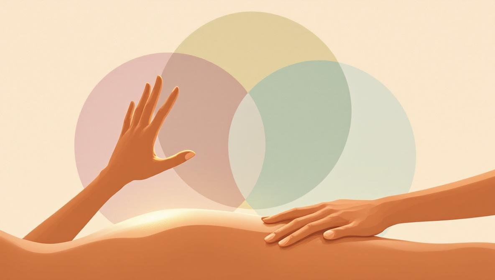

The core difference in one sentence
Massage works on your body — muscles, fascia, connective tissue — through physical pressure, kneading, and stretching. Reiki works on your energy field — through light touch or hands hovering above the body, with no tissue manipulation at all.
A massage therapist treats a tight shoulder by pressing into the muscle. A Reiki practitioner treats the same shoulder by placing hands above it and allowing what practitioners describe as universal life energy to flow. The mechanisms are entirely different, and so is what you feel during the session.
Neither is "better." They do different jobs.
Side-by-side comparison
| Reiki | Massage | |
|---|---|---|
| Origin | Developed by Mikao Usui, Japan, 1922 | Ancient — formal techniques codified across China, Greece, India, and Sweden over millennia |
| What it targets | Energy flow, nervous system balance, emotional release | Muscle tension, fascial restriction, circulation, mobility |
| Physical contact | Light touch or hands hovering — no manipulation | Active pressure, kneading, stretching, deep tissue work |
| What you wear | Fully clothed | Typically undressed and draped with a sheet |
| Session length | 45–60 minutes (in person or distance) | 30–90 minutes (in person only) |
| Works online? | Yes — distance Reiki is part of the tradition | No — requires physical presence |
| Best for | Stress, emotional overload, anxiety, restful sleep, sensitive bodies | Muscle pain, postural tension, recovery from physical effort, mobility |
| Scientific evidence | Limited; small studies on relaxation, pain, and anxiety | Stronger; established research for low back pain, neck pain, anxiety |
| Regulation | Largely unregulated; lineage-based certifications | Regulated in most countries; licensed massage therapists |
| Typical cost | €50–120 / $60–150 per hour | €50–120 / $60–150 per hour |

How a Reiki session feels
You stay fully clothed and lie face-up on a treatment table. The practitioner moves their hands through a series of positions — usually starting at the head, then chest, abdomen, knees, and feet — either resting them lightly on you or holding them a few centimeters above your body. The room is quiet. There may be soft music. You don't have to do anything except breathe.
Most people describe one of three sensations: warmth radiating from the practitioner's hands, a feeling of heaviness or sinking into the table, or nothing in particular until the end, when they realise they feel oddly settled. Some people fall asleep. A minority report nothing physical at all and feel that the session "didn't do anything" — which can happen, and is honest information about whether Reiki resonates with you.
You don't talk during a Reiki session (though you can if you need to). There's nothing to "do." It is a receptive practice.
How a massage session feels
You undress to whatever level you're comfortable with (typically underwear) and lie under a sheet on a treatment table. The therapist exposes one body region at a time and uses oil or lotion to work the tissue. Depending on the style, the work ranges from gentle gliding strokes (Swedish, lymphatic drainage) to firm deep pressure (deep tissue, sports massage) to focused trigger-point work that can briefly feel intense.
You feel the work directly — pressure, stretch, sometimes a "good hurt" on a tight knot, sometimes the soft warmth of warmed oil and rhythmic gliding. You can ask the therapist to use more or less pressure at any point. Communication is part of a good massage.
After a massage, most people feel physically looser, sometimes a little drowsy, occasionally tender for 24 hours after deep tissue work.
What the research actually says
Both practices have a research base, but the depth and rigor differ significantly.
Massage research
Massage therapy is one of the better-studied complementary therapies. Systematic reviews and clinical trials have found evidence supporting massage for:
- Low back pain — short-term improvements in pain and function
- Neck pain — modest short-term benefits
- Anxiety — small to moderate reductions, particularly during cancer treatment and palliative care
- Sleep quality — improvements in older adults and postpartum women
- Cortisol levels — short-term reductions documented in multiple small studies
Massage is generally considered safe when performed by a licensed practitioner. The US National Center for Complementary and Integrative Health (NCCIH) summarises the evidence as "preliminary but encouraging" for several conditions.
Reiki research
The research base for Reiki is thinner. Studies tend to be small, often without adequate blinding, and methodologies vary widely. That said, several small clinical trials and meta-analyses suggest Reiki may produce modest reductions in anxiety, perceived pain, and stress, particularly in hospital and cancer-care settings where it is sometimes offered alongside conventional treatment.
The NCCIH classifies Reiki as a complementary practice with limited evidence; it does not recommend it as a primary treatment for any condition. Importantly, the NCCIH also notes that Reiki appears to be safe — there are no known serious adverse effects.
Honest summary: massage has stronger evidence for physical complaints. Reiki has weaker but non-zero evidence for stress and anxiety, and a clean safety profile.
How to decide which one to try first
You don't have to commit forever. But if you're choosing your first session, here are practical guidelines.
Choose massage if:
- You have specific muscle pain or postural tension — a tight neck from desk work, sore shoulders, low back stiffness.
- You are recovering from physical effort (training, manual labour, a long flight).
- You want immediate, tangible physical relief you can feel during the session.
- You enjoy being physically worked on and don't mind being undressed under a sheet.
- You want a practice with clearer regulation and stronger research evidence.
Choose Reiki if:
- You are mentally exhausted or anxious more than physically sore.
- You have a body that doesn't tolerate firm pressure — fibromyalgia, post-surgery, late pregnancy, chemotherapy.
- You want to stay fully clothed and prefer minimal physical contact.
- You want sessions that can be done online from home.
- You are looking for a quieter, more meditative experience rather than physical intervention.
Can you do both?
Yes. The two practices are entirely compatible and many people benefit from alternating them. A common rhythm is monthly massage for physical maintenance and Reiki between sessions when stress spikes, or vice versa.
Some practitioners are trained in both and offer combined sessions — typically 60 minutes of massage followed by 15–20 minutes of Reiki to close. These integrated sessions can be a good way to compare the two within a single appointment, though they cost a little more. If a combined session interests you, ask the practitioner directly whether they hold separate certifications in each modality (a licensed massage therapist with a Reiki certificate from a recognised lineage is the standard pairing).
What neither practice can do
Neither Reiki nor massage is a medical treatment. Neither can:
- Diagnose or cure medical conditions
- Replace physiotherapy, psychotherapy, or medication
- Treat acute injury, infection, or fever (postpone the session and see a doctor)
- Guarantee any specific outcome
Any practitioner — of either modality — who promises cures, makes diagnoses, or tells you to stop a prescribed treatment is operating outside the ethical scope of their work. Walk away.
There are also specific situations where massage in particular requires caution: certain skin conditions, recent surgery, deep vein thrombosis, advanced osteoporosis, and some stages of pregnancy. If you have any chronic condition, tell the practitioner before you book — a good one will either adapt the session or refer you elsewhere.
Ready to try Reiki?
Holistic Unity connects you with verified Reiki practitioners — in-person and online, worldwide. Massage practitioners are easy to find locally; Reiki specialists less so.
Browse Reiki PractitionersSources and references
- US NIH NCCIH on Reiki: overview, evidence base, and safety information — nccih.nih.gov/health/reiki.
- US NIH NCCIH on Massage Therapy: what the science says about effectiveness and safety — nccih.nih.gov/health/massage-therapy-what-you-need-to-know.
- International Center for Reiki Training (ICRT): founded by William Lee Rand, one of the largest international Reiki training organizations — reiki.org.
- American Massage Therapy Association (AMTA): US-based professional body for massage therapists, with consumer guidance and research summaries — amtamassage.org.
- Massage for low back pain (Cochrane review): Furlan AD, Giraldo M, Baskwill A, Irvin E, Imamura M. “Massage for low-back pain.” Cochrane Database of Systematic Reviews 2015, Issue 9. Concludes massage may be beneficial for short-term improvements in pain and function.
- Reiki and anxiety meta-analysis: Thrane S, Cohen SM. “Effect of Reiki Therapy on Pain and Anxiety in Adults: An In-Depth Literature Review of Randomized Trials with Effect Size Calculations.” Pain Management Nursing 2014; 15(4): 897-908.
- Historical origins of Reiki: Reiki was developed in 1922 by Mikao Usui (1865-1926) in Japan; the modern global tradition derives largely from the lineage of Hawayo Takata (1900-1980).
Frequently asked
Is Reiki the same as massage?
No. Massage is hands-on manipulation of muscles and soft tissue — the practitioner applies pressure, kneading, stretching. Reiki is energy work — the practitioner places hands lightly on or hovering over the body without manipulating tissue. They feel very different and target different things.
Which is better for stress and anxiety — Reiki or massage?
Both can reduce stress and anxiety. Massage works through the body — it lowers cortisol, releases physical tension, and activates the parasympathetic nervous system. Reiki works through stillness and energy — it tends to feel calmer and more meditative. If your stress shows up as muscle tension or pain, massage is often more effective. If it shows up as mental overwhelm or restlessness, Reiki may suit you better. Many people benefit from alternating both.
Can Reiki and massage be combined in one session?
Yes. Many massage therapists also offer Reiki, and some combine the two — physical bodywork followed by 10–15 minutes of Reiki to integrate. Ask the practitioner directly whether they hold certifications in both. Combined sessions are often longer (75–90 minutes) and slightly more expensive than either alone.
Is there scientific evidence that Reiki works?
Research on Reiki is limited and most studies are small. The US National Center for Complementary and Integrative Health (NCCIH) notes that evidence is preliminary but that Reiki is generally considered safe. Massage has a broader and stronger evidence base, particularly for low back pain, neck pain, and short-term anxiety reduction. Neither replaces medical treatment.
Is Reiki cheaper than massage?
Prices vary by location and practitioner experience, but in most markets Reiki and massage sessions cost roughly the same — typically €50–120 per hour in Europe and $60–150 in North America. Distance Reiki sessions are often slightly less expensive because no physical space is required.
Can I do Reiki online but not massage?
Correct. Reiki has a long tradition of distance work — practitioners channel energy across space via video call or scheduled appointment. Massage requires physical presence by definition; there is no remote equivalent. If you want regular online sessions, Reiki is the option.